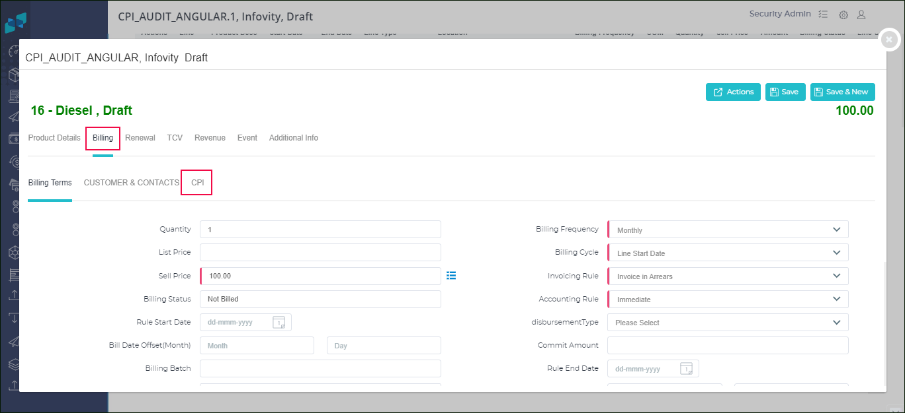
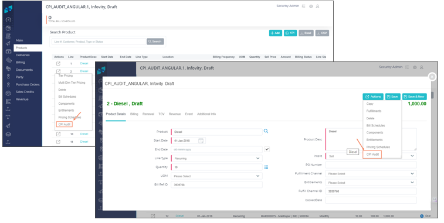
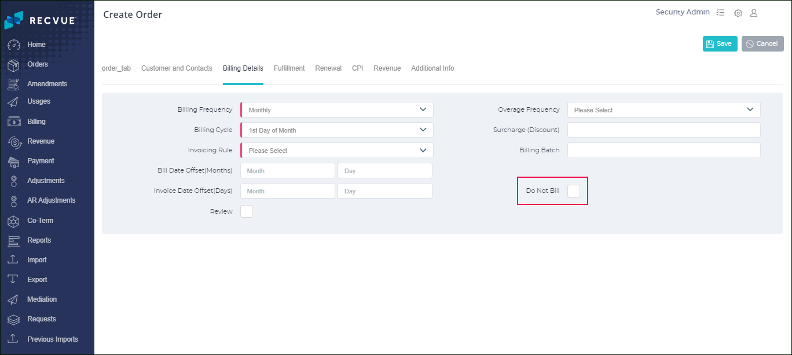
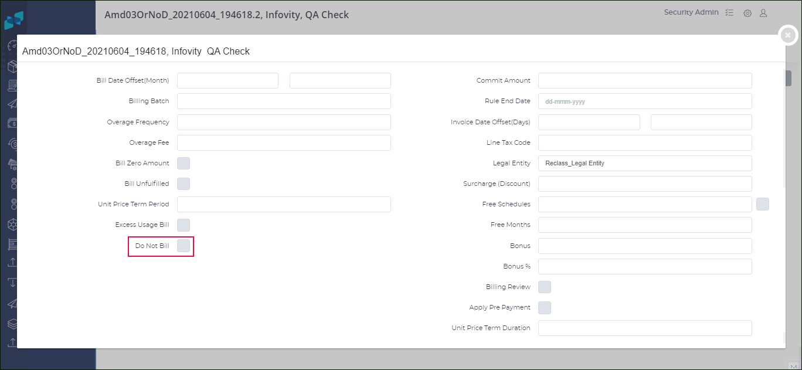
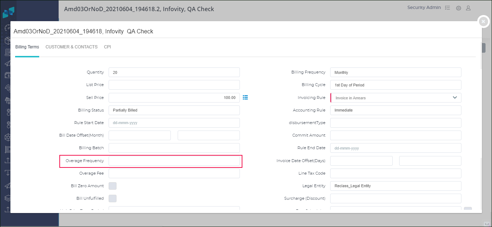
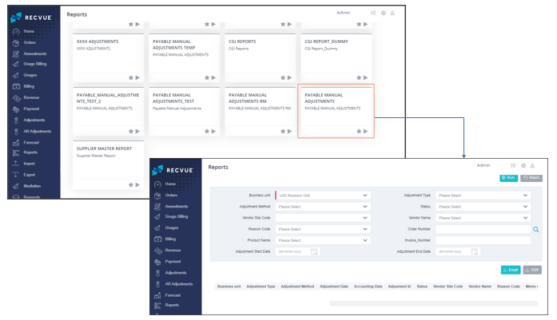
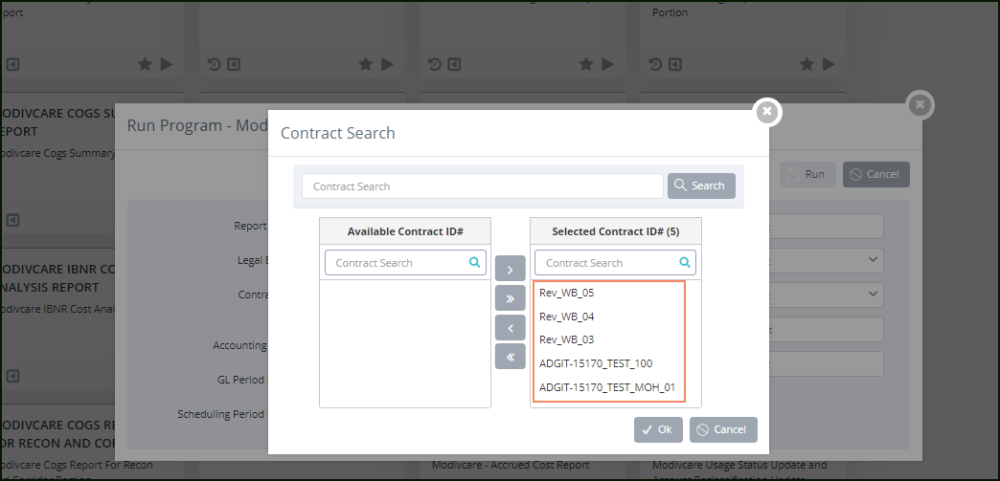
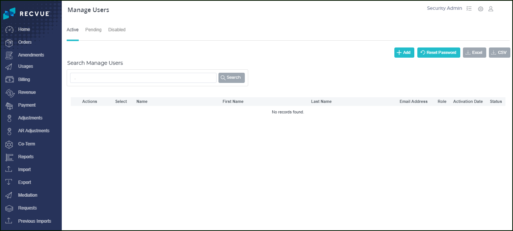

RECVUE'S RELEASE NOTES 23.4

What's New
The following are enhancements/new features in the product organized into the different modules of RecVue.
Customer Price Index (CPI)
CPI for MLM: CPI compatibility has now been extended to Multi Line Minimum product lines, just like it has for recurring and usage products. As a result, the application has been enhanced as follows.
- Provided the CPI tab in the sub-tab menu of the billing tab in the MLM Product Line UI.
- Supports the price uplift of MLM lines.

CPI Audit Report: Provided a separate report called 'CPI Audit Report' to view all previous CPI transactions' details. The CPI Audit Details report option has been added to the Actions button in the Product Line UI.
- It will be displayed in a separate window.
- It contains columns such as the action, audit date, order number, adjustment type, line number, column name, and product name.
- Provides an Excel file download option in your local system explorer.

Asset-as-a-Service
RecVue enhanced with the Asset-as-a-Service (AaaS) feature. 'With this, an asset rule may be defined against an asset (such as equipment, machinery, containers, vehicles, etc.). Charges will be generated for movement depending on the specification of the asset rule. For more details, please contact the RecVue support team.
Billing Management
Exclude from Billing: Provided an option that users can skip specific orders or product lines from the billing. The 'Do not Bill' checkbox has been added to the Billing Details tab screen in both the Product Line UI and Order Header UI. To exclude a specific order or line, the user must select this option. To exclude a specific order or line, the user must select this option.
Refer to the image for the ‘Do not Bill’ option in the Order Header UI:

Refer to the image below for the ‘Do not Bill’ option in the Product Line UI:

MLM - Event Hold: Previously, the parent line of Multi-Line Minimum [MLM] could not create billing schedules if one of its associated lines was applied to an event hold until the hold was lifted.
Now the MLM parent line can still create billing schedules even if one of its associated lines is applied to an event hold. It skips the specific child line that is on event hold and creates billing schedules for the remaining lines. Provided a profile option to use this option. For more information, please contact the RecVue support team.
MLM Overage: In the Product Line UI, provided a MLM Overage
checkbox. If the user selects the checkbox, the MLM will be considered as maximum threshold amount. Each
month the billing amount of child lines is less than the MLM threshold nothing will be billed, or else,
the delta amount will be billed.

Partner Settlement
Payable Manual Adjustments Report: Recent releases introduced the
payment adjustments function to create manual debit and credit memos. In this release, we added the
'Payable Manual Adjustments' report, which provides data on credit and debit memos
based on business units. To generate the report, the "Payable Manual Adjustments" report tile was added
to the Reports UI.

Payment Adjustments: In the Adjustments UI, the following two buttons are added:
- Submit: It is useful to pick several adjustments and submit them all at once.
- Delete: It is useful to delete bulk adjustments that are in draft status with a single click.
Asset Re-Numbering: The asset module now supports renumbering the asset and making payments accordingly. Renumbering means the unique identifier for the asset, which is EQPD (equipment ID and external field), and API-KEY (internal field), are changed to another set of values. This is tracked via asset versioning.
A few changes occurred in the following UIs. For more details, please contact the RecVue support team.
- Fulfilments
- Payments Schedules
- Payment Lines
Order Payment Lines: Provided sorting icons for date columns (Period From and Period To) in the Order Payment Lines window of the Parter Payment Lines UI. A button is added with an Excel icon that allows users to download the information about order payment lines into an Excel file.
Pay Run - KPI: The Key Performance Indicator [KPI] in the Pay Run UI has been enhanced with additional information.
- Vendors
- Orders
- Total Amount
- Paid Amount
- Invoices’ Amount
Revenue Management
Reports are generating currently based on order ID, users have the option to provide a single
order number. We have now provided a multi-select option in the order ID field to generate a report for
multiple orders.

Others
- The search function in the Manage Users UI now returns results based on the search criteria of Email
ID, User First Name, and User Last Name.
 - The user-specific field `Event Type' (Line Tax Code) available in the Billing tab (Billing Term screen) of the Product Line UI now also appears as one of the list options values in the advanced search of the Order Search UI on the line level. It shows the LOV values of the event type field in a separate column where the user can use the filter option and download the details in an Excel or CSV file.
The user-specific field `Event Type' (Line Tax Code) available in the Billing tab (Billing Term screen) of the Product Line UI now also appears as one of the list options values in the advanced search of the Order Search UI on the line level. It shows the LOV values of the event type field in a separate column where the user can use the filter option and download the details in an Excel or CSV file.
What’s Changed
The following features are modified in the product organized by different modules of RecVue.
Order Management
Current Functionality: The scope of mass updating product lines is limited to 10.
Change: The scope of mass updating product lines extended up to 100 product lines at a time.
Current Functionality: The log file will be created after the Process Amendments program runs successfully from the Requests UI. A log file is created with the order ID and amendment details.
Change: To provide more clarity to consumers, the generated log file now includes order numbers instead of order IDs.
Reports and Analytics
Current Functionality: The user-specific monthly billing MRC NRC report is generated based on the legal entity.
Change: The monthly billing MRC NRC report is now generated based on the business unit.
Current Functionality: Currently, only the last run date is defaulted when users run incremental reports through the UI.
ChangeThe incremental reports now run based on the last run date and the last run time as well.
Partner Settlement
Current Functionality: When the pay run is in the review state, users can view the Order# and Pay Amount columns in the Paying UI. If users want more details about a specific order or payment amount, they must open them in separate UIs.
Change: A hyperlink is provided for each value in the columns of Order# and Pay Amount. When the user clicks the link, a new window opens with relevant information.
What’s Fixed
The following are fixes and corrections in the product organized by the different modules of RecVue.
Billing Management
Issue: After upgrading to the most recent release, the prebill functionality was not working as expected.
Fix: The issue has been fixed, and the prebill capability is now operational.
Issue: There was an issue with creating an order using the Create Order API call.
Fix: The issue has been fixed, and the post API is now creating an order as intended.
Issue: Line start and end dates, event hold dates, and event release dates were all out of sync. The original start and end dates of the term still apply when an event is released, and price terms are enabled on the line.
Fix: The issue has been resolved. According to the event release date, the term start and end dates are updated and modified.
Order Management
Issue: The Usages Workbench's export feature was not functioning correctly. The data fails to appear when the user tries to export data using the export button to deliver import.
Fix: The issue has been fixed, and now the export functionality in Workbench is functioning correctly.
Issue: Duplicate records were produced when importing customer data using the imports capability. The same thing occurred even after upgrading the existing data.
Fix: The issue has been resolved, and the importing feature is now operational.
Issue: An order should show up with a 'reactivate’ status after being copied, but this didn't occur until the order was refreshed.
Fix: The issue has been resolved and copy order functionality is working properly.
Issue: TThe adjustment amount in the Adjustment UI displayed improperly due to an error in calculating the sum of debit and credit memos.
Fix: The issue has been fixed. Now, the adjustment amount is displayed correctly. The total of the debit memos is shown as the adjustment amount since the credit memos are negative.
Issue: There was an issue in the amendment process. The amendment order will be created with a new number. If it is again amended, then the old account details will appear in the error log files.
Fix: The issue has been resolved. The amendment process is now working properly.
Reports and Analytics
Issue: When the customer's name in the order line and order header level are different, there was a search issue in the Order Details Report.
Fix: The issue has been resolved.
Others
Issue: It shows unexpected errors in the application if the user repeatedly opens specific user information in the User Management Settings UI.
Fix: The issue has been resolved.